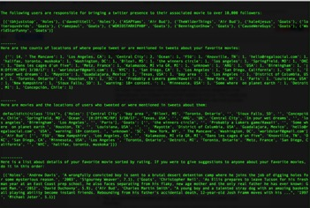
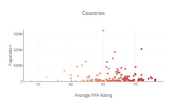

For my SI 106 final project, I created a code that gives you suggested movies to watch on Netflix. You input your favorite movie and then the program will look up movies on Netflix that the director of your favorite movie has directed. If he has not directed anything on Netflix, you will receive an error message. I decided to do this project because people often struggle to find good movies available on Netflix to watch. Unfortunately, the Netflix API is now obsolete, but here is an image of what the OMDB API returns with “Air Bud” as the input.
For my SI 206 final project, I created a code to give people information about the twitter presence of their favorite movies. It creates a database containing information about people’s favorite movies, tweets containing the title of their favorite movies, and users who tweet or are mentioned in the tweets containing the title of their favorite movies. As an output, it creates a text file of information about each movie, the locations of twitter users who tweet about or are mentioned in tweets containing the title of the users favorite movies, and information about twitter accounts who bring a large twitter presence to the users favorite movies.
For my SI 330 project, I decided to analyze the game of FIFA using the FIFA 18 player dataset and the REST countries API to try find out if there is a correlation between player ratings and country populations. I created a visualization on plot.ly and found an r coefficient value of -0.0000054510, indicating there is no correlation between the variables.
